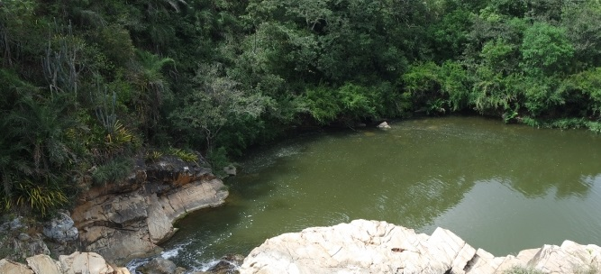

Macambira
História
O atual município de Macambira foi desmembrado do de Campo de Brito, como este de Itabaiana. Seu histórico remoto é o mesmo de seus dois vizinhos citados: holandeses, franceses, negros e portugueses, fizeram daqui um terrão novo para eles e seus filhos, especialmente os holandeses e franceses que já encontrando as terras férteis da cotinguiba ocupadas pelos portugueses, contentaram-se em ficar com as desta região, pedregudas e secas.
Os costumes, e linguajar e outros caracteres sociológicos identificam o povo desses três municípios como da mesma origem. A história de Macambira como município, porém, começa em 1954. Nesse ano, pela Lei Estadual nº 525-A, de 25-11-1953, Macambira passou de povoado à cidade autônoma, sendo instalada em Fevereiro do ano seguinte.
fonte: https://cidades.ibge.gov.br/brasil/se/macambira/historicoPontos Turísticos
Cachoeira de Macambira
A Cachoeira de Macambira é a queda d'água mais famosa de Sergipe, que fica em propriedade particular, mas tem acesso irrestrito para o público. O local ainda não recebeu um projeto turístico ou sustentável. Apenas uma estrutura de madeira e palha conforta os que lá chegam, mas a falta de estrutura é compensada pelo primeiro olhar do balneário.
Dados Gerais de acordo com o IBGE
| Prefeito (a) | José Carivaldo de Souza |
| Vice-Prefeito (a) | Antonio Carlos Alves de Andrade |
| Site do município | https://macambira.se.gov.br/ |
| Área territorial | 137,496 km² |
| População estimada | 7.002 pessoas |
| Densidade demográfica | 46,74 hab/km² |
| IDHM | 0,583 |
| PIB per capita | R$ 11.370,08 |